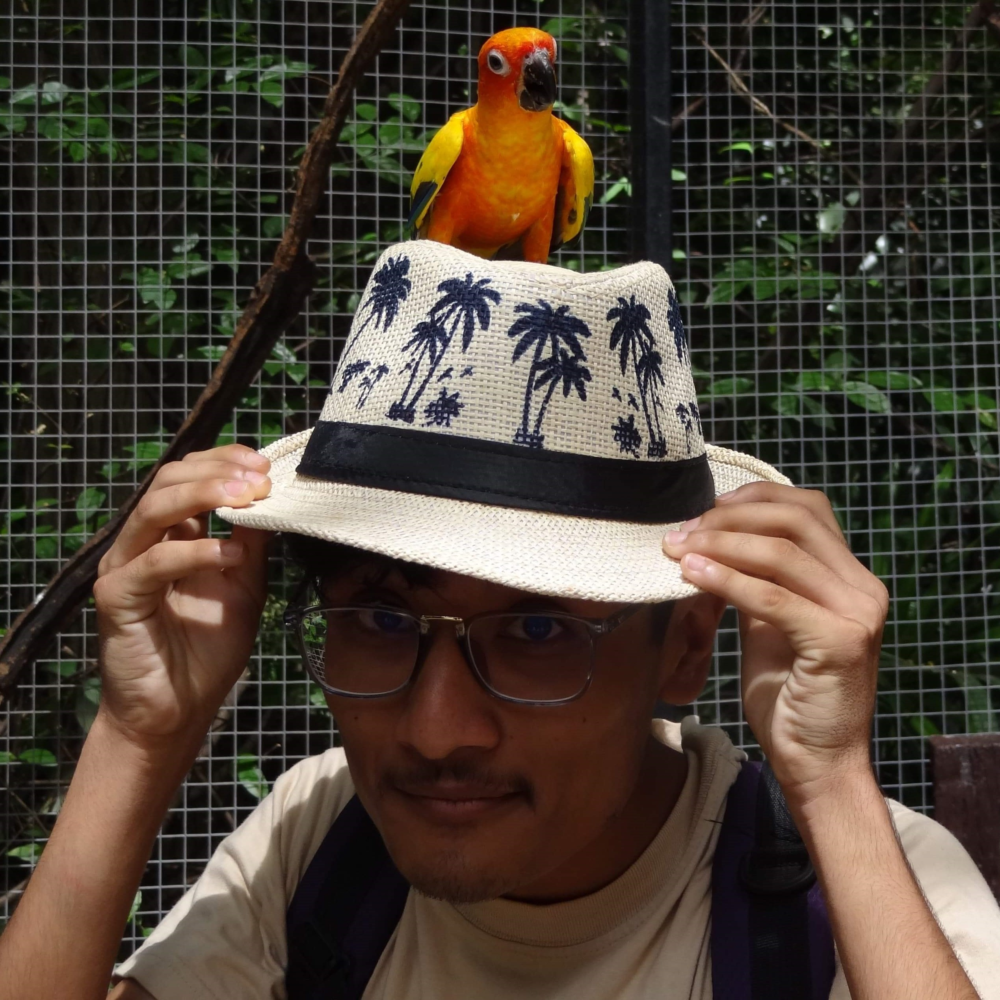

About Me

Shangyu
Karmacharya
Experience
Otaku Next Entertainment, Metro Park Building, Lekhnath Marg, Kathmandu
- Graphics Designer/Digital ArtistDecember 2017 - January 2018
As an Intern:
-Created digital art drawings for social media posts.
-Assisted with designing and editing of advertisement pamphlets.
-Edited and cleaned various comic book chapters for publication.
-Photo-edited pictures of food for a restaurant affiliated with Otaku Next.
Education
St. Xavier’s School, Jawalakhel - SEE
April 2007 - May 2017
Rato Bangala School, Patan Dhoka - A-Levels
June 2017 - July 2019
Islington College, Kamal Pokhari - BSc(Hons) Computing
September 2019 - Ongoing
Kalimati
Kathmandu
9803456215
shangyuk@yahoo.com
Kathmandu
9803456215
shangyuk@yahoo.com
Proficiencies
- Programming (Java, Visual Basic)
- Web Page Designing
- Graphics Designing
By- Shangyu Karmacharya
© 2020 Website